텔레마케팅관리사 (2014-08-17 기출문제)
1과목: 판매관리
1. 고등학교 3학년에 재학 중인 학생이 향후 지원하고자 하는 대학교를 다음과 같이 평가했을 때의 설명으로 맞는 것은?
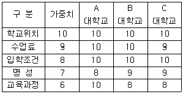
- 보완적 접근법으로 학교를 선택하면 A 대학교를 선택하게 된다.
- 보완적 접근법으로 학교를 선택하면 B 대학교를 선택하게 된다.
- 사전편집식 접근법으로 학교를 선택하면 A 대학교를 선택하게 된다.
- 사전편집식 접근법으로 학교를 선택하면 C 대학교를 선택하게 된다.
(정답률: 56%)

2. 다음의 특징을 가지는 소비재 유형은?
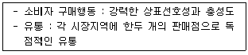
- 편의품
- 선매품
- 전문품
- 비탐색품
(정답률: 81%)
3. 인구통계학적 변수가 아닌 것은?
- 직 업
- 학 력
- 상표애호도
- 종 교
(정답률: 83%)
4. 중간상은 생산자와 사용자 사이에서 다양한 효용을 창출한다. 다음 중 중간상(유통경로)이 창출해 내는 효용이 아닌 것은?
- 장소적 효용
- 시간적 효용
- 형태적 효용
- 자금적 효용
(정답률: 56%)
5. 데이터베이스 마케팅에서 활용되는 고객자료를 데이터마이닝하는 과정을 순서대로 올바르게 나열한 것은?
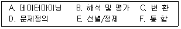
- A → B → C → D → E → F
- B → E → C → A → D → F
- E → D → A → B → F → C
- D → E → C → A → B → F
(정답률: 79%)
6. 판매촉진 전략에 대한 설명으로 틀린 것은?
- 상품에 따라 촉진믹스의 성격이 달라진다.
- 마케팅 커뮤니케이션은 기업커뮤니케이션과 연계되어 있다.
- 불황기에는 촉진활동보다 경로 및 가격설정전략이 중요하다.
- 촉진의 본질은 소비자에 대한 정보의 전달에 있다.
(정답률: 68%)
7. 유통경로의 원칙에 대한 설명으로 틀린 것은?
- 총 거래 수 최소화 원칙 - 유통경로를 설정할 때 중간상을 필요로 하는 원칙으로 이것은 거래의 총량을 줄여, 제조업자와 소비자 양측에게 실질적인 비용부담을 감소시키게 하는 원칙
- 집중저장의 원칙 - 제조업자가 물품을 대량으로 보관하게 하여 소매상의 보관 부담을 덜어주는 원칙
- 분업의 원칙 - 중간상을 통해 유통에도 분업을 이루고자 하는 원칙
- 변동비 우위의 원칙 - 중간상의 역할부담을 중시하여 결국에는 비용부담을 줄이는 원칙
(정답률: 49%)
8. A 대학교 인근에는 만리장성, 가야성, 고려성 등 다양한 중국음식점들이 있으며 모두 음식배달을 하고 있다. 이러한 상황에서 각 중국음식점들이 고려해야 할 가격결정방법으로 가장 적절한 것은?
- 수요를 토대로 한 가격책정
- 수익을 토대로 한 가격책정
- 경쟁을 토대로 한 가격책정
- 비용을 토대로 한 가격책정
(정답률: 88%)
9. 다음 중 기업이 새로운 상품을 개발하고 새로운 시장을 찾아나서야 하는 시장-제품전략으로 맞는 것은?
- 시장침투(Market Penetration)전략
- 시장개발(Market Development)전략
- 제품개발(Product Development)전략
- 다각화(Diversification)전략
(정답률: 56%)
10. 다음 설명에 해당하는 것은?
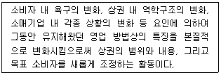
- 재포지셔닝
- 티켓마케팅
- 시장세분화
- 제품차별화
(정답률: 85%)
11. STP 전략의 절차를 바르게 나열한 것은?
- 시장세분화 → 표적시장 선정 → 포지셔닝
- 표적시장 선정 → 시장세분화 → 포지셔닝
- 포지셔닝→ 표적시장 선정 → 시장세분화
- 시장세분화 → 포지셔닝 →표적시장 선정
(정답률: 70%)
12. 고객속성 데이터에 대한 설명으로 옳은 것은?
- 주로 콜센터나 기업의 내부에서 직접 확보 또는 생성한 데이터베이스를 말한다.
- 외부 전문기관에서 구입한 명단, 제휴마케팅을 통해 획득한 데이터베이스를 말한다.
- 고객이 지닌 고유속성으로 주소, 전화번호 등의 데이터를 의미한다.
- 거래나 구매사실, 구매행동 결과로 나타나는 속성으로 회원가입일, 최초구매일, 연체 내역 등의 데이터를 말한다.
(정답률: 82%)
13. 다음 중 인바운드 텔레마케팅의 업무가 아닌 것은?
- 각종 문의‧불만사항 대응
- 통신판매의 전화 접수
- 앙케이트 조사
- 광고에 대한 문의 설명
(정답률: 81%)
14. 다음 중 데이터베이스(Data Base) 마케팅에 대한 설명으로 맞는 것은?
- PC만을 이용하여 표준화된 제품으로 불특정 다수의 고객에 접근하는 마케팅이다.
- 대중매체를 통하여 전국적으로 대중에게 자사의 상표인지도를 높게 유지하는 것이다.
- Database 마케팅은 VIP고객 리스트만을 이용한 마케팅 기법이다.
- Database 마케팅에서 Database는 고객의 개인별 특성을 담고 있어야 한다.
(정답률: 78%)
15. 다음 중 잠재고객의 대상으로 거리가 먼 것은?
- 현재는 다른 경쟁업체를 이용하고 있으나 해당 기업의 제품이나 서비스에 대해 알고 있어 향후 자사 고객으로 확보할 수 있다고 판단되는 고객
- 특정 제품이나 서비스에 대해 문의를 하는 고객 또는 이 같은 고객이 자신의 신분이나 연락처를 밝히는 경우
- 웹상에서 비록 회원가입은 하지 않았으나 자주 클릭하여 접촉을 하거나 하였다고 예측, 판단되는 고객
- 회사에 리스크를 초래하였거나 신용상태, 가입자격 등이 미달되는 고객
(정답률: 86%)
16. 고객이 구매의사 결정 활동을 함에 있어 어려운 이유로 가장 거리가 먼 것은?
- 제품의 다양성, 기술의 진보, 제품의 복잡성, 소매시장 구조변화 등으로 구매활동이 복잡하고 선택할 상품이 많기 때문이다.
- 기술이 발달되어 제품의 품질, 안전, 성능에 대한 정보가 제한되어 있고 전문가의 도움이 필요하기 때문이다.
- 동일상품도 다양한 가격형태를 보이고 있어 소비자는 더 낮은 가격에 더 좋은 품질의 제품을 구매하기 위하여 상당한 노력과 시간을 소비해야 하기 때문이다.
- 현대인은 쇼핑할 시간이 없을 정도로 바빠서 합리적인 소비활동과 의사결정을 할 시간이 제한되기 때문이다.
(정답률: 65%)
17. 아웃바운드 텔레마케터에서 요구되는 개인적 자질로 보기 어려운 것은?
- 긍정적인 사고방식
- 맑고 생동감 있는 목소리
- 뚜렷한 목표의식과 시간관리 능력
- 고객의 거절이나 반론에 순응하는 자세
(정답률: 85%)
18. 아웃바운드 텔레마케팅에서 잠재고객을 구매고객으로 전환시키는 방법으로 볼 수 없는 것은?
- 고객을 이해시키고 실질적 혜택부여
- 조건 없는 가격할인을 통한 구매유도
- 관심이 많은 고객을 집중적으로 설득
- 고객과 텔레마케터 간 커뮤니케이션 강화
(정답률: 76%)
19. 다음이 설명하고 있는 마케팅 정보시스템의 종류는?
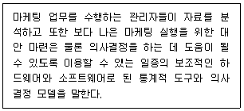
- 고객정보 시스템
- 마케팅 인텔리전스 시스템
- 마케팅조사 시스템
- 마케팅의사결정 지원시스템
(정답률: 75%)
20. 아웃바운드 판매상담시 고객과의 관계형성방법으로 가장 거리가 먼 것은?
- 고객과 이야기할 수 있는 공통적인 화제를 찾는다.
- 인사는 밝고 친근감 있게 한다.
- 가벼운 첫인사 후 바로 본론으로 들어간다.
- 고객의 신분에 맞는 존칭어를 활용한다.
(정답률: 79%)
21. 마케팅믹스의 정의로 가장 적합한 것은?
- 표적시장에서 마케팅목표를 달성하기 위하여 기업이 활용하는 마케팅 도구의 집합이다.
- 마케팅의 통제 불가능한 환경을 분석하는 것이다.
- 인사, 재무, 생산, 조직을 통합하는 것이다.
- 비영리마케팅을 추구하는 것이다.
(정답률: 83%)
22. 인바운드 텔레마케팅의 상담절차를 바르게 나열한 것은?
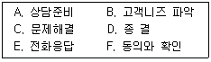
- A → E → B → C → F → D
- A → B → E → C → F → D
- A → E → B → F → C → D
- A → B → C → E → F → D
(정답률: 66%)
23. 다음 중 유통경로의 설계과정을 바르게 나열한 것은?
- 고객욕구분석 → 유통경로의 목표설정 → 경로대안의 평가 → 주요 경로대안의 식별
- 고객욕구분석 → 유통경로의 목표설정 → 주요 경로대안의 식별 → 경로대안의 평가
- 고객욕구분석 → 주요 경로대안의 식별 → 유통경로의 목표설정 → 경로대안의 평가
- 고객욕구분석 → 주요 경로대안의 식별 → 경로대안의 평가 → 유통경로의 목표설정
(정답률: 72%)
24. 다음 중 자료의 수집을 위해 기업들은 다양한 조사방법을 활용할 수 있다. 이러한 조사방법들 중 “수집할 수 있는 자료의 양은 적지만, 조사의 소요시간이 빠르고 표본의 대표성이 높은” 조사방법은?
- 대인면접
- 전화조사
- 우편조사
- 방문조사
(정답률: 69%)
25. 표본추출방법 중 “모집단 내의 구성요소들이 표본으로 선정될 확률이 알려져 있어 조사자의 주관성을 배제할 수 있는 객관적인 방법”의 유형이 아닌 것은?
- 단순무작위표본추출
- 층화표본추출
- 할당표본추출
- 군집표본추출
(정답률: 67%)
2과목: 시장조사
26. 다음은 조사연구를 설계하고 진행할 때 거쳐야하는 여러 가지 절차이다. 이러한 절차를 순서대로 올바르게 나열한 것은?
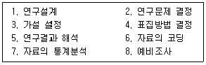
- 3-2-1-4-6-8-5-7
- 3-2-4-1-8-6-5-7
- 2-3-1-4-8-6-7-5
- 2-3-4-1-6-8-7-5
(정답률: 47%)
27. 시장조사는 필요한 정보를 획득하고 이용하는 과학적인 절차로 볼 수 있다. 현대 기업이 지향해야 하는 시장조사의 궁극적 목표와 가장 가까운 것은?
- 이윤극대화
- 고객만족
- 생산자와 조직의 이익
- 시장의 확대
(정답률: 70%)
28. 탐색적 조사방법(Exploratory Research)에 해당하지 않는 것은?
- 관련분야의 문헌 조사
- 변수간의 인과관계 조사
- 대표성을 지닌 대상자의 사례 조사
- 특정분야의 전문가 의견 조사
(정답률: 65%)
29. 설문지 응답자의 권리를 보호하기 위한 사항으로 틀린 것은?
- 응답자에게는 조사면접에 꼭 참가해야 할 의무가 없다.
- 조사자는 응답자가 조사면접에 익숙하지 못하기 때문에 면접의도에 맞는 응답을 유도한다.
- 조사자는 응답자에게 질문을 객관화함으로써 응답자의 사생활을 침해하지 말아야 한다.
- 조사자는 응답자와 조사면접을 할 때 면접에 관한 세칙과 지시사항에 따라서 수행해야 한다.
(정답률: 70%)
30. 다음 사례에 해당되는 표본추출방법은?
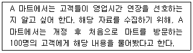
- 비확률표본추출
- 확률표본추출
- 통계적 추론
- 기준표본추출
(정답률: 59%)
31. 전수조사와 표본조사에 대한 설명으로 틀린 것은?
- 전수조사는 정밀도에 중점을 두고 사용되며, 모든 부분을 전부 조사하는 것을 말한다.
- 표본조사는 부분조사라고도 한다.
- 표본조사는 전수조사에 비해 인력과 시간 및 비용이 적게 든다.
- 다면적으로 조사결과를 이용하려 할 때에는 표본조사를 한다.
(정답률: 61%)
32. 다음에 제시되어 있는 설문지 문항 중 잘못 작성된 것은?
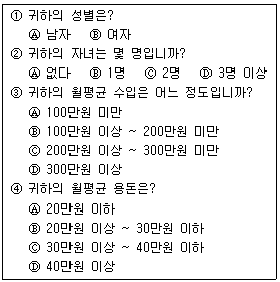
- ①
- ②
- ③
- ④
(정답률: 66%)
33. 공개되어 있는 자료 중에서 필요한 정보를 모으는 가장 기초적인 시장조사방법은?
- 듣기조사
- 오픈 데이터의 수집
- 관찰조사
- 전화조사
(정답률: 76%)
34. 다음 질문지 작성순서가 맞게 나열된 것은?
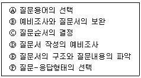
- Ⓐ → Ⓑ → Ⓒ → Ⓓ → Ⓔ → Ⓕ(A→B→C→D→E→F)
- Ⓒ → Ⓓ → Ⓔ → Ⓐ → Ⓑ → Ⓕ(C→D→E→A→B→F)
- Ⓑ → Ⓐ → Ⓒ → Ⓓ → Ⓔ → Ⓕ(B→A→C→D→E→F)
- Ⓓ → Ⓔ → Ⓕ → Ⓒ → Ⓐ → Ⓑ(D→E→F→C→A→B)
(정답률: 58%)
35. 다음이 설명하고 있는 것은?
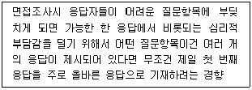
- 후광효과(Halo Effect)
- 1차정보효과(Primacy Effect)
- 동조효과(Acquiescence Effect)
- 최근정보효과(Recency Effect)
(정답률: 60%)
36. 조사자는 토론할 주제나 문제에 대해 설명을 하고 토론 및 면접의 형식을 통하여 주제에 대한 질문이나 토론을 이끌어가며 응답자의 반응을 기록하는 의사소통방법은?
- 대인면접법
- 전화면접법
- 우편면접법
- 인터넷면접
(정답률: 78%)
37. 측정대상간의 순서관계를 밝혀주는 척도로서, 측정대상을 특정한 속성으로 판단하여 측정대상 간의 대소나 높고 낮음 등의 순위를 부여해주는 척도는?
- 명목척도
- 서열척도
- 등간척도
- 비율척도
(정답률: 75%)
38. 다음이 설명하고 있는 것은?
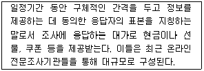
- 모집단
- 모 델
- 패 널
- 판매자
(정답률: 54%)
39. 변인(Variable)에 대한 설명으로 거리가 먼 것은?
- 인과관계를 분석할 목적으로 수행되는 연구에서 원인이 되는 변인이 독립변인이다.
- 독립변인과 종속변인의 관계에서 직접적인 인과관계가 아닌 제3변인의 효과를 포함하는 경우의 제3변인이 중재변인이다.
- 독립변인 이외에 종속변인에 영향을 주는 모든 변인이 매개변인이다.
- 조작적 정의에 따라 관찰가능하고 측정 가능한 실체가 있는 변인이 관찰변인이다.
(정답률: 40%)
40. 다음 중 전화조사를 위한 표본추출방법에 대한 설명으로 틀린 것은?
- 전화번호부를 활용할 때에는 맨 앞과 맨 끝은 배제하는 것이 좋다.
- 최초의 목적대로 그리고 하나의 규정이 있으면 그에 따라 계속한다.
- “가나다” 순으로 되어 있는 기존 전화번호부에서 표본을 추출할 때에는 체계적 표본추출법을 사용하는 것이 좋다.
- 지역적 표본 추출시 전화번호부에 표기된 지역번호 구분이 아니라 행정적 경계에 따라 표본단위를 정하는 것이 좋다.
(정답률: 43%)
41. 다음 중 내적타당도를 저해하는 요인이 아닌 것은?
- 특정사건의 영향
- 사전검사의 영향
- 조사대상자의 차별적 선정
- 반작용 효과(Reactive Effects)
(정답률: 63%)
42. 면접조사의 장점으로 옳지 않은 것은?
- 면접자가 응답자의 상황에 따라 대화분위기를 자연스럽게 조절할 수 있다.
- 대화를 통한 응답자의 적극적인 참여 유도가 가능하다.
- 면접의 오류, 오해를 극소화할 수 있다.
- 면접의 특성에 따라 즉석에서 대답할 수 없는 경우가 발생될 수 있다.
(정답률: 68%)
43. 설문지 질문문항의 작성방법으로 틀린 것은?
- 응답자가 이해하기 쉬운 표현을 사용하여야 한다.
- 한 질문에 한가지 이상의 질문을 통해 설문의 효율성을 높여야 한다.
- 유도 또는 강요하는 표현을 금지하여야 한다.
- 응답자가 대답하기 곤란한 질문들에 대해서는 직접적인 질문을 피하도록 한다.
(정답률: 79%)
44. 우편조사의 회수율을 높이기 위한 노력과 효율적인 비용측면에 대한 내용으로 거리가 가장 먼 것은?
- 예비조사를 통해 회수율을 사전예측하고 추가 계획을 수립한다.
- 설문지 발송 후 일정기간이 지나면 설문지와 반송봉투를 다시 발송한다.
- 응답된 설문지에 대해 각종 이벤트에 참석할 수 있도록 기회를 제공한다.
- 고객에게 우편을 보냄과 동시에 동일한 내용을 전화상으로 설명하여 고객의 이해를 돕는다.
(정답률: 41%)
45. 전화조사의 장점에 관한 설명으로 잘못된 것은?
- 개별면접 방법보다 시간과 비용 면에서 경제적이다.
- 심층조사가 가능하여 자료수집이 용이하다.
- 응답자들이 면접자와의 대면적 조사방법에서 느끼는 불편감을 제거할 수 있다.
- 조사자의 질문방법에 따라 조사결과에 영향을 미쳐 서로 다른 결과를 가져올 위험이 있다.
(정답률: 66%)
46. 다음 중 단순히 측정대상을 구분하기 위한 목적으로 숫자를 부여하는 데 사용되는 척도는?
- 명목척도
- 서열척도
- 등간척도
- 비율척도
(정답률: 65%)
47. 다음 중 척도법의 선택이 가장 적합한 것은?
- 광고인지도를 조사하기 위해 서열척도를 선택했다.
- 매출액을 조사하기 위해 명목척도를 선택했다.
- 상품 선호 순위를 측정하기 위해 비율척도를 선택했다.
- 주가지수를 조사하기 위해 등간척도를 선택했다.
(정답률: 51%)
48. 어떤 현상이나 변수의 원인이 무엇인가에 대한 해답 즉, 두 변수간의 인과관계에 대한 해답을 얻기 위한 조사방법은?
- 분석법
- 관찰법
- 탐색법
- 실험법
(정답률: 62%)
49. 대구, 부산, 전주에 있는 주부들을 대상으로 자주 이용하는 대형마트를 단기간 내 조사 완료해야 할 때 가장 적합한 자료수집방법은?
- 방문조사
- 면접조사
- 전화조사
- 관찰조사
(정답률: 72%)
50. 집단뿐 아니라 개인 또는 추상적인 가치에 관해서 적용할 수 있으며, 집단 상호간의 거리를 측정하는 데 유용한 것은?
- 보가더스척도
- 거트만척도
- 소시오메트리
- 서스톤척도
(정답률: 34%)
3과목: 텔레마케팅관리
51. 상담원에 대한 기본교육으로 가장 거리가 먼 것은?
- 회사에 대한 이해와 비전(Vision)
- 상담원에게 필요한 자질
- 조직 및 인사관리
- 테이프 녹음과 화법 연습
(정답률: 68%)
52. 텔레마케터의 역할로 거리가 먼 것은?
- 현장판매
- 통신판매
- 시장조사
- 대금회수
(정답률: 48%)
53. 고객의 전화가 상담사에게 연결되는 동시에 상담사의 컴퓨터 화면에 고객 정보가 나타나는 기능은?
- 스크린 팝(Screen Pop)
- 음성 사서함(Voice Mail)
- 다이얼링(Dialing)
- 라우팅(Routing)
(정답률: 76%)
54. 텔레마케팅의 특성에 대한 설명으로 옳지 않은 것은?
- 공중통신망을 이용한 소극적 마케팅이다.
- 데이터베이스 마케팅 중심으로 수행한다.
- 시스템과 유기적으로 결합해야 한다.
- 고객의 LTV(Life Time Value)를 존중한다.
(정답률: 78%)
55. OJT(On the Job Training)를 실시할 때 지켜야 할 원칙이 아닌 것은?
- 업무와 직접 관련된 교육을 실시한다.
- 신입사원 입사 시에만 활용하는 교육이다.
- 체계적이고 지속적이어야 한다.
- 상담원의 능력을 극대화할 수 있는 방향으로 실시한다.
(정답률: 77%)
56. 상담원의 통화품질을 평가할 때 고려사항이 아닌 것은?
- 나이, 출신학교, 신장
- 음성능력, 표현능력, 정확한 발음
- 구술능력, 조직적응력, 목표의식
- 음성능력, 청취력, 집중력
(정답률: 80%)
57. 콜센터 구성 장비 중 ACD(Automatic Call Distributor)의 기능으로 맞는 것은?
- 미리 녹음된 메시지를 고객에게 내보내고 고객은 전화기 버튼을 눌러서 정보를 입력하거나 선택을 하게 하여 자동화된 상담 업무를 가능하게 하는 장치
- 콜센터에 걸려온 전화를 정해진 규칙에 따라 적절한 상담원에게 연결시켜주는 자동 호(CALL) 분배시스템
- 컴퓨터를 통해 전화 통화를 자동으로 제어하도록 하거나 전화를 통해 입력된 데이터를 바탕으로 컴퓨터에 저장된 고객정보를 자동으로 찾아주는 시스템
- 고객과 상담원의 통화 내용을 자동으로 녹음하는 장치
(정답률: 75%)
58. 회원가입, 캠페인, 이벤트 등을 실시할 때 사전에 보내진 메일을 수신한 고객에게 전화고지를 해서 개봉 촉진 또는 반응 효과를 향상시키기 위해 실시하는 것은?
- Pre-call
- Cold Call
- Pay-per-call
- Handled Call
(정답률: 48%)
59. 인바운드 상담원 성과관리 평가 지표가 아닌 것은?
- 평균 통화 처리시간
- 평균 통화 시간
- 평균 대기 시간
- 표준작업일 평균 통화수
(정답률: 58%)
60. 텔레마케팅 활용분야 중에서 아웃바운드 텔레마케팅에 해당하는 것은?
- 상품 판매
- 고객 불만 접수
- A/S 접수
- 전화번호 안내
(정답률: 79%)
61. 텔레마케터 관리자에게 필요한 리더십이 아닌 것은?
- 반복되는 업무인 만큼 매너리즘에 빠지지 않도록 동기부여 방안을 마련한다.
- 고객감동이 실현될 수 있도록 고객지향적인 관점에서 업무 프로세스를 지속적으로 개선한다.
- 텔레마케터의 경력개발을 위한 교육방향을 설정한다.
- 비교적 이직률이 높은 조직인 만큼 우수 텔레마케터에 대해서만 집중관리를 한다.
(정답률: 82%)
62. 성과주의 인사제도의 구성요소에 해당되지 않는 것은?
- 선별적 채용
- 성과주의 평가
- 공식적인 교육훈련
- 연공서열 위주의 승진
(정답률: 68%)
63. 직무분석(Job Analysis)의 결과물로 산출되는 것은?
- 직무 관리서
- 직무 기술서
- 직무 발전서
- 직무 개발서
(정답률: 56%)
64. 다음이 설명하고 있는 것은?
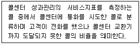
- 포기율(Abandoned Rate)
- 응대율(Response Rate)
- 에러율(Error Rate)
- 불통율(Blockage Rate)
(정답률: 61%)
65. 다음이 설명하고 있는 것은?
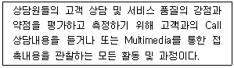
- QM(Quality Monitoring)
- 스크립트
- 벤치마킹
- 코 칭
(정답률: 64%)
66. 다음 중 통화 생산성 측정 지표와 가장 거리가 먼 것은?
- 고객접촉률
- 평균 응대속도
- 평균 콜처리 시간
- 통화 후 처리시간
(정답률: 46%)
67. 유통경로 전략에 대한 설명으로 가장 거리가 먼 것은?
- 개방적 유통경로는 전문품에 적용한다.
- 선택적 유통경로는 선매품에 적용한다.
- 개방적 유통경로는 유통비용의 증가를 가져온다.
- 전속적 유통경로는 유통비용의 감소를 가져온다.
(정답률: 63%)
68. 콜센터 성과변수를 고객성과와 업무성과로 구분할 때 조직내부의 업무수행과정에서 나타나는 업무성과에 해당하는 것은?
- 고객유지율 확립
- 고객만족도 향상
- 고객모니터링 기능 강화
- 고객획득률 증가
(정답률: 41%)
69. 상담원을 모니터링 한 결과 중 적극적인 상담활동에 해당하는 것은?
- 제품에 대한 설명이 부족하다.
- 고객이 반대하면 바로 중단한다.
- 고객의 말을 끝까지 듣지 않아도 원하는 것을 직감적으로 판단한다.
- 가망고객과 계속 접촉을 시도한다.
(정답률: 74%)
70. 콜센터에서 모니터링 담당자(QAA ; Quality Assurance Administrator)의 역할에 대한 설명으로 맞는 것은?
- 콜센터장을 보좌하여 텔레마케터들을 관리하고 현장을 지도하는 역할
- 콜센터에 사용되는 장비의 성능을 지속적으로 감시하고 관리하는 역할
- 텔레마케터들의 통화 내용에 대해 평가하고 개선점을 찾아내 개선할 수 있도록 도와주는 역할
- 일정 자격 수준을 갖춘 텔레마케터들을 채용할 수 있도록 관리하는 역할
(정답률: 71%)
71. 텔레마케터의 성과관리를 위한 목표 결정시 유의할 사항으로 적합하지 않은 것은?
- 목표를 구체적으로 기술한다.
- 목표 달성 시점이 명시되어야 한다.
- 목표 달성 여부를 측정할 수 있어야 한다.
- 목표는 아주 높은 수준으로 결정한다.
(정답률: 80%)
72. 커크패트릭의 교육훈련 평가의 네 가지 기준 중 효과성을 측정하기가 가장 용이한 것은?
- 결과기준 평가
- 행동기준 평가
- 학습기준 평가
- 반응기준 평가
(정답률: 27%)
73. 인적 자원의 가치를 체계적이고 합리적으로 측정하기 위한 지표에 관한 설명으로 틀린 것은?
- 인적자본 수익성지표 - 종업원 단위당 생산성
- 인적자본 경제적 부가가치지표 - 종업원 단위당 실제 기업 이익
- 인적자본 투자수익률 지표 - 인적 자원에 대한 투자금액
- 인적자본 시장가치지표 - 종업원 단위당 지적자산 크기
(정답률: 33%)
74. 콜센터의 인력관리 프로세스를 순서대로 바르게 나열한 것은?
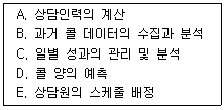
- A → B → D → E → C
- B → A → D → E → C
- B → D → A → E → C
- B → C → D → E → A
(정답률: 46%)
75. 콜센터 리더가 갖추어야 할 리더십으로 가장 거리가 먼 것은?
- 경험적 리더십
- 코칭적 리더십
- 지시적 리더십
- 학습적 리더십
(정답률: 58%)
4과목: 고객응대
76. 서비스 및 상품 구매 후 상담요령과 거리가 먼 것은?
- 상담의 문제점 및 잘못된 점을 파악한다.
- 서비스 가능성과 보상여부를 판단한다.
- 사후관리에 따른 스케줄링을 한다.
- 합리적인 구매의사 결정을 위해 정보를 제공한다.
(정답률: 55%)
77. 표현적인(Expressive) 유형의 고객 상담 전략과 가장 거리가 먼 것은?
- 고객의 생각을 인정하면서 긍정적인 피드백을 준다.
- 고객의 이야기만을 경청하고, 상담자 본인의 이야기는 전혀 하지 않는다.
- 제품이나 서비스가 어떻게 고객의 목표나 욕구를 충족시켜 줄 수 있는지 설명한다.
- 의사결정을 촉진할 적정수준의 인센티브를 제공한다.
(정답률: 81%)
78. 고객에게 질문시 상황에 따라 각기 다르게 질문 유형을 적용하여야 한다. 다음 중 고객니즈 탐색을 위한 폐쇄형 질문 유형으로 적합하지 않은 경우는?
- 고객의 민감한 부분의 확인이 필요할 때
- 보다 구체적인 정보를 필요로 할 때
- 고객의 이해정도를 확인하고자 할 때
- 고객으로부터 자유로운 의사타진이나 대답을 원할 때
(정답률: 58%)
79. 앨런 피스(Allan Peace)가 제시한 비언어적 행동의 의미가 잘못 연결된 것은?
- 눈을 치켜뜨는 행동 - 흥미, 집중
- 먼 곳을 쳐다보는 행동 - 주의분산, 조바심
- 눈길을 돌리는 행동 - 불만, 불신, 이해부족
- 안절부절 못하는 행동 - 흥미결여, 불쾌함
(정답률: 52%)
80. 다음이 설명하고 있는 것은?
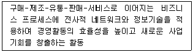
- Electronic Commerce
- OFF-Line Business
- B2B
- E-Business
(정답률: 60%)
81. 고객의 구체적인 욕구를 파악하기 위해 사용되는 질문기법에 대한 설명으로 틀린 것은?
- 고객이 잘못 이해하고 있는 내용이나 틀린 말은 즉각적으로 바르게 고쳐주거나 평가해 준다.
- 고객에게 가능하면 긍정적인 질문을 한다.
- 질문내용을 구체화하여 고객에게 질문한다.
- 더 좋은 서비스를 제공하기 위해 소비자가 확실히 원하는 것을 찾아내는 질문을 한다.
(정답률: 79%)
82. 양방향 의사소통의 조건에 해당하지 않는 것은?
- 의사소통을 일으키는 발신자가 있어야 한다.
- 발신된 메시지를 받아들이는 수신자가 있어야 한다.
- 발송자와 수신자 사이에 의사소통이 일어나는 통로가 있어야 한다.
- 반드시 말하기와 쓰기가 이루어질 수 있는 환경이 있어야 한다.
(정답률: 79%)
83. 텔레마케팅 스크립트의 활용 방법으로 적합하지 않은 것은?
- 스크립트를 사전에 충분히 숙지하여 응대한다.
- 고객과의 상담흐름에 따라 조절하여 사용한다.
- 스크립트에 작성된 표현 외에는 절대 사용하지 않는다.
- 스크립트는 정기적으로 검토하여 수정 및 보완한다.
(정답률: 78%)
84. 효과적인 질문을 하기 위한 방법과 가장 거리가 먼 것은?
- 질문의 목적을 미리 숙지한다.
- 질문의 이유를 설명한다.
- 질문할 내용과 순서를 미리 준비한다.
- 질문보다는 상품설명을 자세히 한다.
(정답률: 82%)
85. 고객응대의 범위에 대한 설명으로 가장 거리가 먼 것은?
- 상담은 주로 대면적 접근이 많지만 정화상담이나 인터넷 상담 등과 같이 비대면적 접근도 포함된다.
- 고객응대란 상담자와 내담자 쌍방간의 커뮤니케이션이라고 볼 수 있다.
- 고객응대로는 내담자가 안고 있는 문제의 상황, 문제의 심각성 등을 이해할 뿐 해결해 줄 수는 없다.
- 고객응대는 언어나 무자 등으로 전달이나 대화의 도구라고 할 수 있는 메시지가 있어야 한다.
(정답률: 79%)
86. 다음 중 고객가치 측정방법에 해당하지 않는 것은?
- 고객생애가치
- 고객점유율
- RFM
- 시장점유율
(정답률: 68%)
87. 메타그룹의 산업보고서에서 처음 제안된 CRM시스템 아키텍처의 3가지 구성요소가 아닌 것은?
- 통합CRM
- 운영CRM
- 협업CRM
- 분석CRM
(정답률: 38%)
88. Oliver(1996)가 제시한 고객만족의 구성요인이 아닌 것은?
- 소비상황의 만족
- 과정의 만족
- 지각차원의 만족
- 결과의 만족
(정답률: 24%)
89. 의사소통(Communication)에 대한 설명으로 적합하지 않은 것은?
- 일반적으로 어느 누구도 의사소통을 하지 않을 수 없다.
- 일련의 의사소통은 연속된 상호작용으로 간주될 수 있다.
- 의사소통이란 생각이나 사고의 언어적 상호교환이다.
- 의사소통은 불확실성을 증가시킨다.
(정답률: 83%)
90. 소비자의 욕구가 다양해지고 기업 간의 경쟁이 치열하기 때문에 고객만족 경영이 필수적이 되었다. 이러한 경영환경의 변화에 관한 설명으로 틀린 것은?
- 산업화 사회에서 정보화 사회로 변화였다.
- 소비자 요구가 소유 개념에서 개성 개념으로 변하였다.
- 시장의 중심이 소비자에서 생산자로 변하였다.
- 규모의 경제에 따른 경쟁에서 부가가치로 변하였다.
(정답률: 79%)
91. CRM의 성공요인 중 조직 측면적인 요인으로 볼 수 없는 것은?
- 최고경영자의 지속적인 지원과 관심이 있어야 한다.
- 고객지향적이고 정보지향적인 기업의 성향이 높을수록 CRM의 수용도도 높아진다.
- CRM은 시스템의 복합성 때문에 여러 부서의 참여보다는 마케팅부서의 단독 실행이 더 효과적이다.
- 평가 및 보상은 CRM의 성공적 실행에서 반드시 극복해야 할 장애물임과 동시에 조직변화를 유도하는 필수적인 요소이다.
(정답률: 78%)
92. 의사소통 방법 중 언어적인 메시지에 해당하지 않는 것은?
- 말
- 편 지
- 메 일
- 음성의 억양
(정답률: 67%)
93. 불평고객을 응대하는 요령 중 MTP기법에 해당되지 않는 것은?
- 해당 상담원에서 수퍼바이저 또는 팀장으로 바꿔 응대한다.
- 환불을 요구하는 경우는 고객과 절충해서 적당한 선에서 해결한다.
- 처음부터 변명하거나 대꾸하지 않고 경청을 하며 고객이 진정할 때까지 기다린다.
- 방문고객의 경우 조용한 장소로 옮기고 편안하게 앉을 수 있도록 배려한다.
(정답률: 60%)
94. 인바운드 상담 중 고객의 욕구를 파악하기 위한 방법으로 가장 거리가 먼 것은?
- 고객정보 활용
- 적극적 경청
- 이점 제안
- 효과적인 질문 활용
(정답률: 62%)
95. 다음 설명에 해당하는 의사소통 모델의 구성요소는?
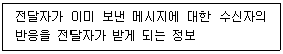
- 채 널
- 피드백
- 내 용
- 해 독
(정답률: 76%)
96. 다음의 설명에 해당하는 고객유형은?
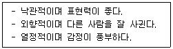
- 주도형
- 사교형
- 온화형
- 분석형
(정답률: 77%)
97. 다음 중 안정형의 고객 행동경향에 대한 설명으로 바람직하지 않은 것은?
- 대체적으로 인내심이 강하다.
- 자신의 의견을 말하기보다는 듣고자 한다.
- 상품 구매 결정이 신속히 이루어진다.
- 질문에 대한 답변이 바로 나오지 않는다.
(정답률: 68%)
98. 다음 중 경청의 방해요인이 상담원 개인적 요인인 것은?
- 편 견
- 전화벨
- 무더위
- 소음공해
(정답률: 72%)
99. 커뮤니케이션에서 나타날 수 있는 문제점으로써 전달자 측면의 요인에 대한 설명이 아닌 것은?
- 전달경로의 특성 - 커뮤니케이션의 통로를 의미하며 대면, 문서, 통화 상징물 등이 포함된다.
- 메시지 명확화 능력 - 전달하고자 하는 정보의 내용을 얼마나 명확하게 할 수 있는가 하는 능력이다.
- 전달능력 - 자신의 메시지를 정확하고 신속하게 전달할 수 있는 매체를 선정하고 이를 활용할 수 있는 능력을 말한다.
- 개인적 특성 - 전달자의 감정과 태도 또는 가치관이나 기질 등에 관련되는 인격이 내향성인가 또는 외향성인가, 지배성향이 강한가 또는 약한가 등에 따라 커뮤니케이션의 효과는 달라질 수 있다.
(정답률: 33%)
100. CRM에서 현실적인 관계형성을 위해 고객이 기업에게 기대하는 관계 구축의 요소로 틀린 것은?
- 상호 간의 신뢰
- 공정한 대우
- 단기적인 관계
- 열린 대화 창구
(정답률: 80%)